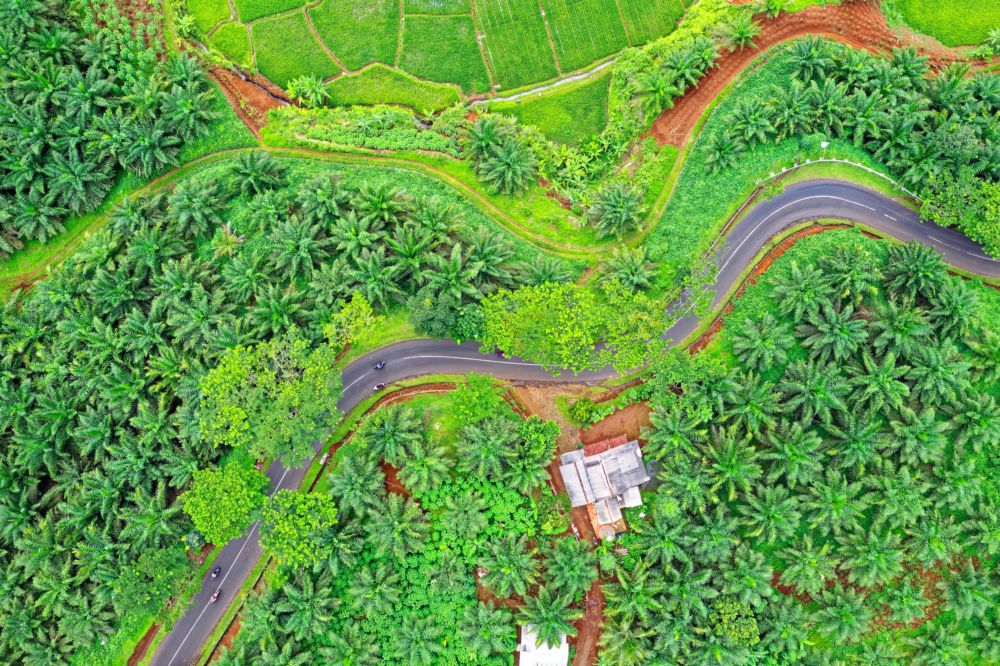

Briket Berkat
Solusi energi biomassa premium dari Demak, Indonesia. Mengubah limbah organik menjadi briket arang berkualitas ekspor dengan panas maksimal dan tanpa bahan kimia.
The Origin
Latar Belakang
Persoalan energi dan pengelolaan limbah biomassa merupakan dua tantangan yang saling berkaitan, khususnya di wilayah pesisir seperti Demak, Jawa Tengah. Di satu sisi, kebutuhan akan sumber energi alternatif yang terjangkau terus meningkat seiring naiknya harga bahan bakar fosil.
Di sisi lain, limbah tempurung kelapa dari industri pengolahan kopra menumpuk tanpa pemanfaatan optimal. Briket Berkat (NAF Company) hadir untuk mengelola limbah biomassa ini secara produktif.
Kami mentransformasi limbah tersebut menjadi produk bernilai ekonomi tinggi yang jauh melampaui kualitas arang konvensional. Kami berkomitmen menjaga kelestarian lingkungan agar generasi mendatang tetap dapat menikmati keindahan alam Nusantara.

Tujuan & Komitmen
Visi & Misi
Visi Kami
Menjadi produsen briket arang tempurung kelapa terpercaya yang berkontribusi nyata pada pengelolaan lingkungan dan pemberdayaan ekonomi lokal di Jawa Tengah.
Misi Kami
- Memanfaatkan limbah tempurung kelapa secara optimal menjadi produk bernilai ekonomi tinggi.
- Menghasilkan briket arang kualitas ekspor dengan standar kompetitif (kadar air, abu, dan nilai kalor).
- Membangun kemitraan strategis dengan petani kelapa lokal untuk menjamin rantai pasok yang berkelanjutan.
Keunggulan Kompetitif
Kualitas Ekspor
3 Jam
Durasi Bakar
100%
Bahan Alami (Tanpa Kimia)
Rendah
Asap & Bau
Ramah
Lingkungan (Eco-Friendly)
Target Pasar & Keunggulan Strategis
Permintaan briket tempurung kelapa terus meningkat tajam, khususnya dari negara-negara Eropa (untuk budaya BBQ) dan kawasan Timur Tengah.
Keunggulan Logistik: Fasilitas produksi kami berada di Demak, sangat dekat dengan Pelabuhan Tanjung Emas, Semarang, memberikan efisiensi luar biasa dalam biaya logistik untuk pengiriman ekspor.
Manufaktur
Proses Produksi
Tempurung kelapa berkualitas tinggi dengan kadar air di bawah 15% diperoleh dari pengepul lokal Jepara.
Pembakaran dalam retort kiln tertutup pada suhu 300-500°C selama 4-6 jam dengan sistem pirolisis untuk meminimalisir emisi.
Pendinginan selama 12 jam, dilanjutkan dengan penggilingan menjadi serbuk halus berukuran 40-60 mesh.
Serbuk arang dicampur dengan perekat alami (tepung tapioka) dengan rasio 10:1 hingga homogen dan kokoh.
Adonan diproses menggunakan mesin press semi-otomatis berkapasitas 50-80 kg/jam (bentuk hexagonal/silinder).
Pengeringan menggunakan oven selama 1-2 hari hingga kadar air di bawah 8%, dilanjutkan dengan Quality Control.
Hubungan Investor
SGS & Kontak Bisnis
Spesifikasi Target Berdasarkan Standar Internasional
KCAL/KG
MOISTURE
ASH CONTENT
FIXED CARBON
Untuk pertanyaan investasi, pengadaan B2B, dan permintaan sampel ekspor, silakan hubungi kami:
nafianismun@gmail.com+62 819 5378 8109
Hubungi via WhatsAppNAF Ismun Nafian Company © 2026 | Demak, Jawa Tengah, Indonesia